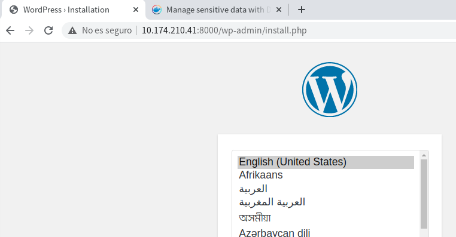

Ampliación tutorial introducción¶
1. Docker Secret¶
Imagine un despliegue con una base de datos postgres y adminer (herramienta de gestión de bases de datos de código abierto, gratuita y basada en PHP). Necesita indicar el usuario, clave y base de datos al servidor postgres. La primera solución (no recomendable en un entorno de producción) es introducir esos valores en el fichero compose-postgres.v0.yml:
version: '3.1'
services:
db:
image: postgres
container_name: postgres-container
environment:
POSTGRES_USER: pps
POSTGRES_PASSWORD: ppspassword
POSTGRES_DB: ppsDB
adminer:
image: adminer
ports:
- 8080:8080
Hacerlo de esta forma tiene el inconveniente de hacer visible esa información sensible. Para gestionar este tipo de información en el despliegue se puede usar docker secret.
https://docs.docker.com/engine/swarm/secrets a secret is a blob of data, such as a password, SSH private key, SSL certificate, or another piece of data that should not be transmitted over a network or stored unencrypted in a Dockerfile or in your application’s source code. You can use Docker secrets to centrally manage this data and securely transmit it to only those containers that need access to it. Secrets are encrypted during transit and at rest in a Docker swarm. A given secret is only accessible to those services which have been granted explicit access to it, and only while those service tasks are running.
Se puede crear un secreto de dos formas:
- Usando el comando
docker secret createpara crear primero el secreto y luego usarlo en el despliegue. - A partir de un secreto almacenado en fichero y crear de forma automática el secreto en el momento del despliegue.
Debe tener en cuenta un detalle: docker secret es un servicio que se debe ejecutar en un cluster, luego debe iniciar primero un cluster (en este caso de un nodo) con docker swarm init. El uso de docker swarm se incluye en otra práctica.
$ docker swarm init
....
$
1.1. Primer ejemplo: secretos generado por comando¶
En el despliegue de postgres y adminer primero se crean con el comando docker secret create tres secretos de nombres pg_user, pg_password y pg_database:
$ echo "pps" | docker secret create pg_user -
nqfkihla5j5n4z1d72via08rq
$ echo "ppspassword" | docker secret create pg_password -
p02zpc0uqjm01b1lyfb76gvdv
$ echo "ppsDB" | docker secret create pg_database -
o6o15f0e6vo4da0er7wq7j9j1
$
Puede listar los secretos creado con el comando docker secret ls:
$ docker secret ls
ID NAME DRIVER CREATED UPDATED
o6...j1 pg_database 28 s ago 28 s ago
p0...dv pg_password 39 s ago 39 s ago
nq...rq pg_user 9 s ago 49 s ago
d$
Una vez creados los secretos se modifica el fichero compose que los utilice. Los secretos por defecto se montan en el directorio /run/secrets del contenedor. Por eso las variables de entorno del servicio db en el siguiente fichero compose se asocian a los ficheros /run/secrets/pg_user, etc. En el bloque de secrets del fichero compose se indica su procedencia externa.
En este caso el fichero compose-postgres.v1.yml será similar a este:
services:
db:
image: postgres
restart: always
environment:
POSTGRES_USER_FILE: /run/secrets/pg_user
POSTGRES_PASSWORD_FILE: /run/secrets/pg_password
POSTGRES_DB_FILE: /run/secrets/pg_database
secrets:
- pg_password
- pg_user
- pg_database
....
# tienen que estar creados previamente
secrets:
pg_user:
external: true
pg_password:
external: true
pg_database:
external: true
En un cluster la forma de desplegar es con el comando docker stack deploy, indicando el nombre del fichero con la opción -c file y el nombre del stack en este caso demo:
$ docker stack deploy -c compose_postgres.v1.yml -d demo
Creating network demo_default
Creating service demo_db
Creating service demo_adminer
$
Y ahora puede acceder al gestor adminer:


Para terminar hay que eliminar el despliegue del stack (docker stack rm <stack>) y desactivar el cluster (docker swarm leave):
$ docker stack rm demo
Removing service demo_adminer
Removing service demo_db
Removing network demo_default
$ docker swarm leave --force
Node left the swarm.
$
1.2. Segundo ejemplo: secretos en fichero¶
En este ejemplo se despliega el CMS wordpress que utiliza una base de datos mysql. En este caso los secretos se utilizan en los dos servicios del despliegue, y se van a almacenar en ficheros externos al contenedor. A estos ficheros docker accede en el momento del despliegue para leer su contenido y crear de forma automática los secretos.
Primero se crean los ficheros con la información sensible. Se usa openssl para crear las claves (si desea modificar la longitud de la clave modifique el último valor de openssl) y se redirige la salida a un fichero. El usuario y la base de datos no se han considerado información sensible en este ejemplo.
Se crean dos ficheros:uno para la clave de root mysql y otro para la clave del usuario en mysql/wordpress.
$ openssl rand -base64 30 > db_root_password.txt
$ openssl rand -base64 30 > db_user_password.txt
$ cat dd_*.txt
i8Z+9B78TV4j12IeeCVfIWi7j+JLvGIi1aq/fLsp
/J9+qoBVHtFvvKi85LA+EcAAVu5NoVFf1b2Uyp5c
$
Ya se ha comentado que los secretos están disponibles para los servicios en el directorio /run/secrets del contenedor. Lo que cambia en este segundo ejemplo es el apartado final donde se indica para cada secreto el fichero que le corresponde. Tenga en cuenta que los valores del usuario (pps) y su clave (/run/secrets/db_password) deben coincidir en los dos servicios. El fichero compose_wordpress.yml queda:
services:
db:
image: mysql:latest
volumes:
- db_data:/var/lib/mysql
environment:
MYSQL_ROOT_PASSWORD_FILE: /run/secrets/db_root_password
MYSQL_DATABASE: ppsDB
MYSQL_USER: pps
MYSQL_PASSWORD_FILE: /run/secrets/db_user_password
secrets:
- db_root_password
- db_user_password
wordpress:
depends_on:
- db
image: wordpress:latest
volumes:
- wordpress_data:/var/www/html
ports:
- "8000:80"
environment:
WORDPRESS_DB_HOST: db
WORDPRESS_DB_NAME: ppsDB # si no se define creo toma el valor wordpress
WORDPRESS_DB_USER: pps
WORDPRESS_DB_PASSWORD_FILE: /run/secrets/db_user_password
secrets:
- db_user_password
secrets:
db_user_password:
file: db_user_password.txt
db_root_password:
file: db_root_password.txt
volumes:
db_data:
wordpress_data:
Recuerde que en este caso no se crean los secretos antes del despliegue (no se usa docker secret create), sino que se generan de forma automática en el momento del despliegue. Esto se puede observar en la salida del comando docker stack deploy:
$ docker stack deploy -c compose_wordpress.yml -d demo
Creating network demo_default
Creating secret demo_db_root_password
Creating secret demo_db_user_password
Creating service demo_db
Creating service demo_wordpress
$
Puede comprobar los secretos creados:
$ docker secret ls
ID NAME DRIVER CREATED UPDATED
39...l7 demo_db_root_password 9 m. ago 9 m. ago
kk...zz demo_db_user_password 9 m. ago 9 m. ago
$
O el estado de los servicios del stack:
$ docker stack ls
NAME SERVICES
demo 2
$ docker stack services demo
ID NAME MODE REPLICAS IMAGE PORTS
24hyojjstv53 demo_db replicated 1/1 mysql:latest
x10j8zw84xkw demo_wordpress replicated 1/1 wordpress:latest *:8000->80/tcp
usuario@d12-base-01:~/CIBER-PPS/bloque_05_docker/t01-docker-tutorial-101/src_TODO
$
Y ahora compruebe si wordpress está funcionando de forma conjunta con el servidor mysql. Para ello acceda al puerto 8000 de localhost (o a la IP de su equipo) y se debe mostrar la página inicial de configuración del CMS wordpress:

Puede hacer pruebas, añadir páginas o artículos, etc.
Para borrar el despliegue docker stack rm <nombre_deploy>
$ docker stack rm demo
Removing service demo_db
Removing service demo_wordpress
Removing secret demo_db_root_password
Removing secret demo_db_user_password
Removing network demo_default
$
Y para borrar el cluster docker swarm leave. Tenga en cuenta que en ese caso se eliminan los secretos.
2. docker config¶
Si la información que utiliza no es "sensible" es posible usar docker config en vez de docker secrets. En el despliegue previo se podría haber usado para almacenar el usuario y base de datos.
Tiene un ejemplo en este enlace: Use Swarm Managed Configs
3. Docker compose con build de una imagen¶
En este enlace se muestra un ejemplo de un fichero docker-compose que además realiza un build de la imagen que va a desplegar.
Para ello es necesario tener previamente definido el fichero Dockerfile que define la construcción de esa imagen. En el ejemplo tiene disponible el código de la aplicación, el fichero Dockerfile y el fichero docker-compose.yml.
La parte que nos interesa es como indicarle que tiene que usar la imagen que genera el Dockerfile. Y eso se indica con la clave build: . dentro de la definición del servicio web:
services:
web:
build: .
ports:
- "8000:5000"
...
En este caso sólo se le indica a build el contexto y busca el fichero Dockerfile. Existen más opciones para indicar el nombre del fichero Dockerfile, darle nombre a la imagen, etc.
Puede crear la imagen con el comando docker compose build que recorre los servicios buscando que imágenes debe construir. Tambien puede invocar docker compose como habitualmente y si no existe la imagen la crea en ese momento.
4. Mejorando compose de postgres: iniciar la BD¶
A los ficheros compose que usan bases de datos se les puede añadir:
- Persistencia a los datos con el uso de un volumen con nombre para la base de datos. Esto ya se ha incluido en el ejemplo de wordpres con un volumen para la base de datos y otro para wordpress.
- Incluir scripts SQL que cuando se crea el volumen asociado a la base de datos puede crear e iniciar tablas. Para eso es necesario montar el fichero (o un directorio si hay varios scripts) en el directorio
/docker-entrypoint-initdb.d/del contenedor.
El fichero compose_postgres.v3.yml quedaría:
version: '3.1'
sservices:
db:
image: postgres
environment:
POSTGRES_PASSWORD: ppspassword
POSTGRES_USER: pps
POSTGRES_DB: ppsDB
volumes: # Mejoras al fichero
- ./inicia.sql:/docker-entrypoint-initdb.d/inicia.sql
- db_data:/var/lib/postgresql/data
adminer:
image: adminer
ports:
- 8080:8080
volumes: # necesario al añadir volumen
db_data:
Y un fichero inicia.sql podría ser:
CREATE TABLE "test" (
"id" serial NOT NULL,
PRIMARY KEY ("id"),
"nombre" character varying(32) NOT NULL,
"email" character varying(254) NOT NULL
);
INSERT INTO "test" ("nombre", "email")
VALUES
('Ana', 'ana@local.com'),
('Raul', 'raula@local.com'),
('Raquel', 'raquel@local.com');
Al invocar el compose y crear el volumen se ejecuta el script en la base de datos ppsDB. La próxima vez que levante el servicio si el volumen existe no se ejecuta el script sql.
5. Anexo - Crear un registro docker en local¶
En vez de usar DockerHub puede mantener un registro propio para distribuir sus imágenes en local,
$ docker service create --name registry --publish published=5000,target=5000 registry:2
$ docker service ls
wbgfqi6e93vgatef1pbklmggm
overall progress: 1 out of 1 tasks
1/1: running [==================================================>]
verify: Service converged
$ docker images
REPOSITORY TAG IMAGE ID CREATED SIZE
getting-started latest 81....6c 45 minutes ago 223MB
registry <none> 67....fa 2 months ago 26.2MB
$
Usaremos una de las imágenes ya descargadas para añadirla al registro local. Primero debe etiquetar la imagen con el nombre de la máquina (o IP) y puerto del servicio (when the first part of the tag is a hostname and port, Docker interprets this as the location of a registry, when pushing).
$ docker tag getting-started:latest localhost:5000/getting-started
$ docker images
REPOSITORY TAG ID CREATED SIZE
getting-started latest 81..c 51 minutes ago 223MB
localhost:5000/getting-started latest 81..c 51 minutes ago 223MB
registry <none> 67..a 2 months ago 26.2MB
$
Hacemos push a nuestro servicio de registro:
$ docker push localhost:5000/getting-started
Using default tag: latest
The push refers to repository [localhost:5000/getting-started]
ed3bd20764dc: Pushed
...
0fcbbeeeb0d7: Pushed
latest: digest: sha256:9d0cd8fbbe...aae70b59dee30da4 size: 1789
$
Borramos la imagen local:
$ docker images
REPOSITORY TAG IMAGE ID CREATED SIZE
registry <none> 678dfa38fcfa 2 months ago 26.2MB
$
Y hacemos una prueba de descarga desde el registro creado indicando el nombre y puerto del servicio:
$ docker pull localhost:5000/getting-started
Using default tag: latest
latest: Pulling from getting-started
...
Digest: sha256:9d0cd8fbbe871...40ba5545a16924aae70b59dee30da4
Status: Downloaded newer image for localhost:5000/getting-started:latest
localhost:5000/getting-started:latest
$
Para eliminar el servicio de registro usamos docker service rm
$ docker service ls
ID NAME MODE REPLICAS IMAGE PORTS
wbgfqi6e93vg registry replicated 1/1 registry:2 *:5000->5000/tcp
$ docker service rm registry
registry
$ docker service ls
ID NAME MODE REPLICAS IMAGE PORTS
$ docker pull localhost:5000/getting-started
Using default tag: latest
Error response from daemon: Get http://localhost:5000/v2/: dial tcp 127.0.0.1:5000: connect: connection refused
$
Más información: https://docs.docker.com/registry/deploying/